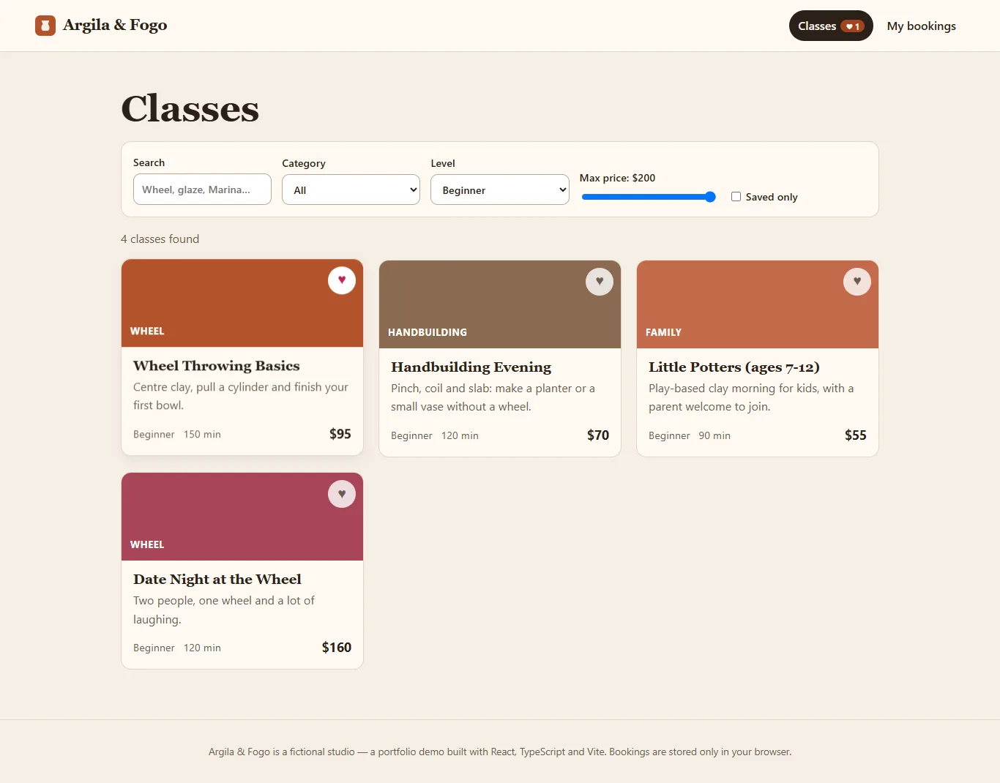
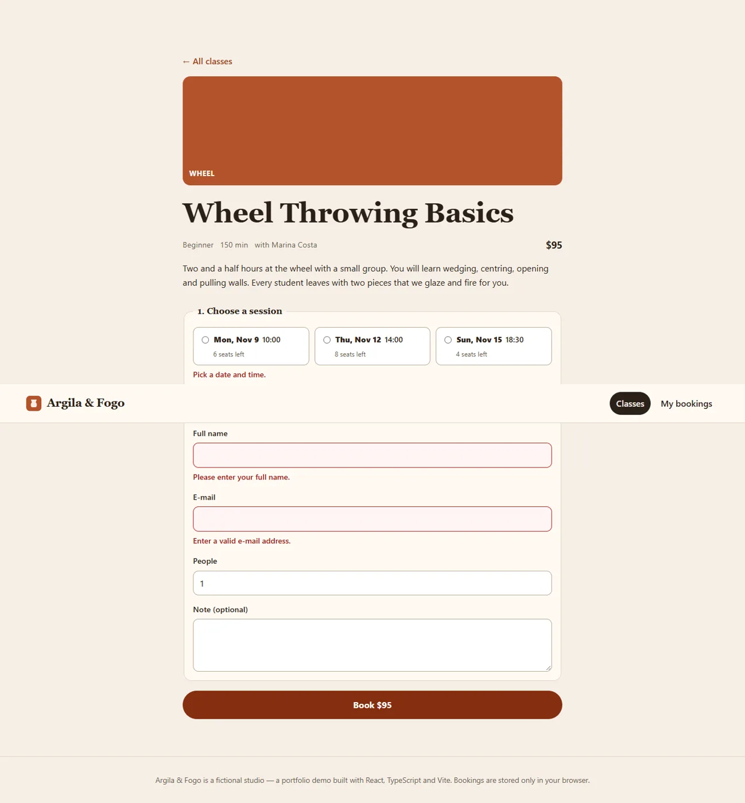

Argila & Fogo
Aplicativo web em React + TypeScript para um ateliê de cerâmica fictício: o aluno busca aulas, filtra, salva as favoritas e reserva a vaga, com controle de lotação.

O que o app faz
- Busca e filtrosPor texto, categoria, nível e preço, mais a lista de favoritas.
- Reserva com validaçãoO formulário aponta o erro em cada campo e desconta a vaga da turma.
- Minhas reservasLista e cancelamento, guardados no navegador.
- Estado previsívelContext e useReducer, rotas com React Router, tipos estritos em todo o código.
- Testado10 testes automatizados (Vitest) e lint sem erros.
- ResponsivoFeito para celular e computador, com foco visível e contraste AA.
- React 19
- TypeScript
- Vite
- React Router
- Vitest
- ESLint
Telas


Rodar no seu computador
npm install npm run dev # servidor local npm test # testes npm run build # site estático em dist/
O código-fonte está em codigo/, sem node_modules. O README tem os detalhes.